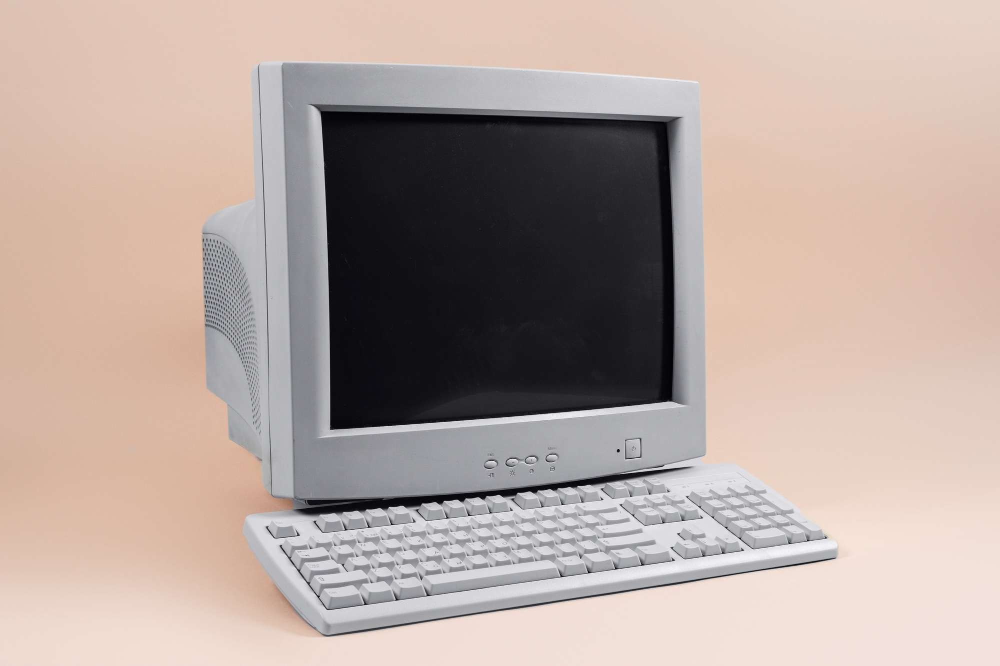

1977 Introduction of the First Personal Computer  The first personal computer, introduced in 1977, revolutionized the way people interacted with computers. These early systems were more affordable, paving the way for the digital age. Learn More